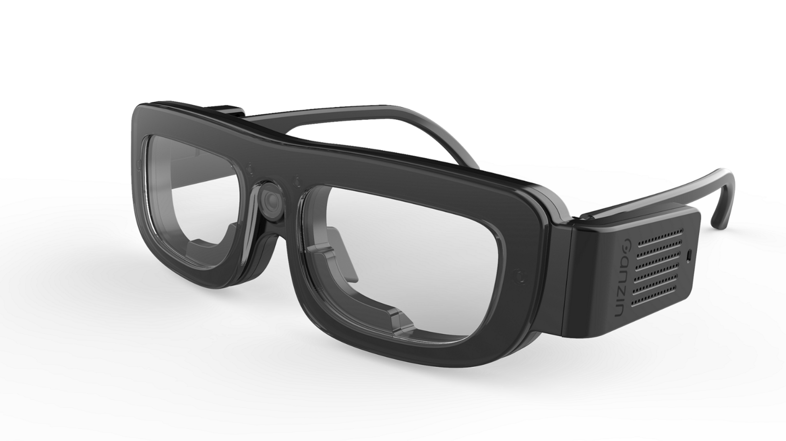
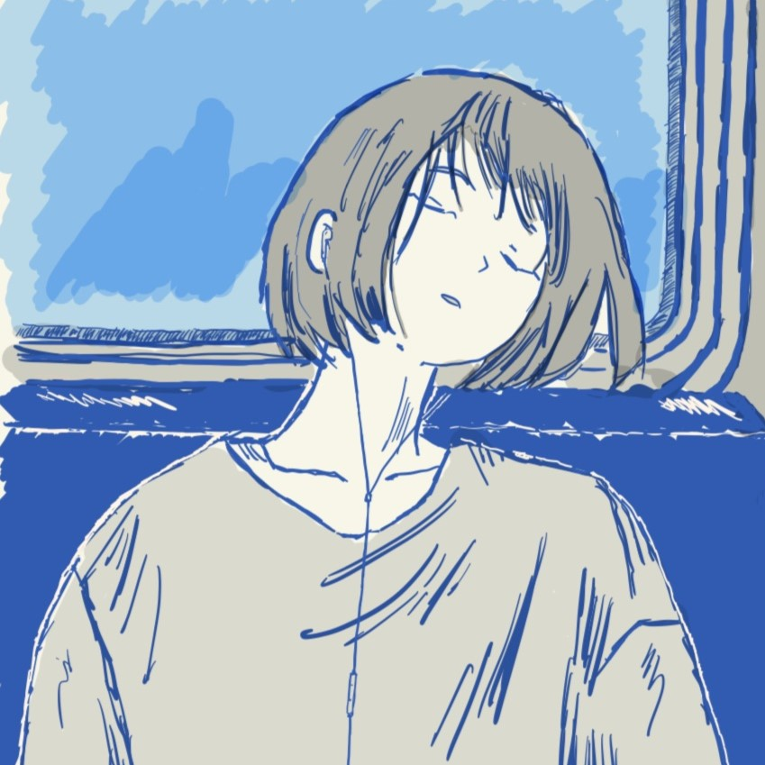

Welcome to Blog
root@Snackeyes:~#
Master student from CCU
A member of BioSAS Lab / DSP523
like Web Develop, Technology, Street Photography 📷 !
#Engineering #Program #Photography #Art

精選專案 (Featured Projects)

root@Snackeyes:~#
Master student from CCU
A member of BioSAS Lab / DSP523
like Web Develop, Technology, Street Photography 📷 !
#Engineering #Program #Photography #Art

